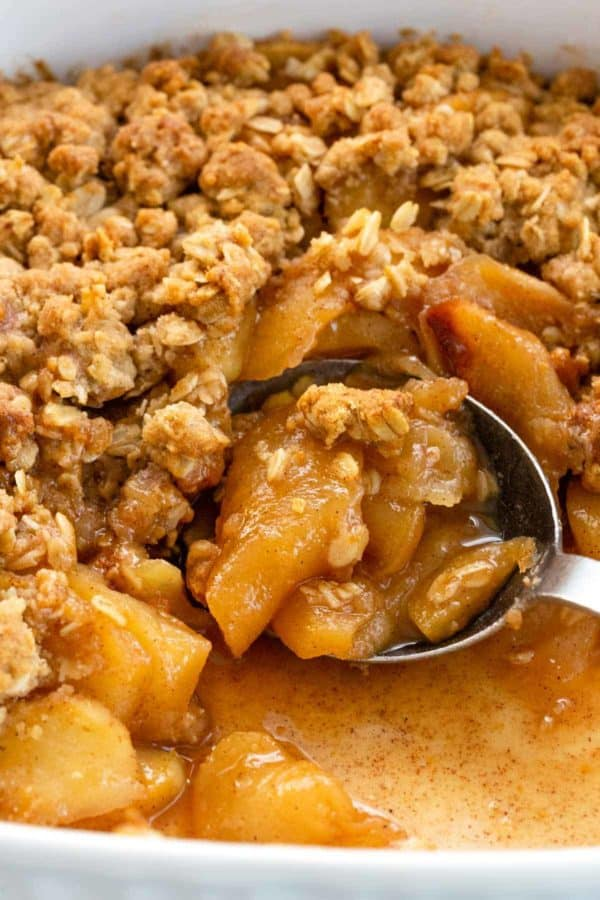

Apple Crisp

Description
Apple crisp is one of the first recipes I learned to make myself as a child and I made it often for my family then.
Now I make it for my own family. They like it with vanilla ice cream.
Ingredients
- 6 cups apples -- peeled and sliced
- 1 teaspoon cinnamon
- 1 teaspoon lemon juice
- 1 cup rolled oats
- 3/4 cup all purpose flour
- 3/4 cup brown sugar, firmly packed
- 1/2 cup butter or margarine, softened
Steps
- Heat oven to 375 degrees.
- Place apples in ungreased 2-quart casserole.
- Sprinkle with cinnamon, water and lemon juice.
- In large bowl, combine remaining ingredients; mix with pastry blender orfork until crumbly.
- Sprinkle crumb mixture evenly over apples.
- Bake 25 to 35 minutes or until fruit is tender and topping is golden brown.
- Serve warm with cream, ice cream or whipped cream.